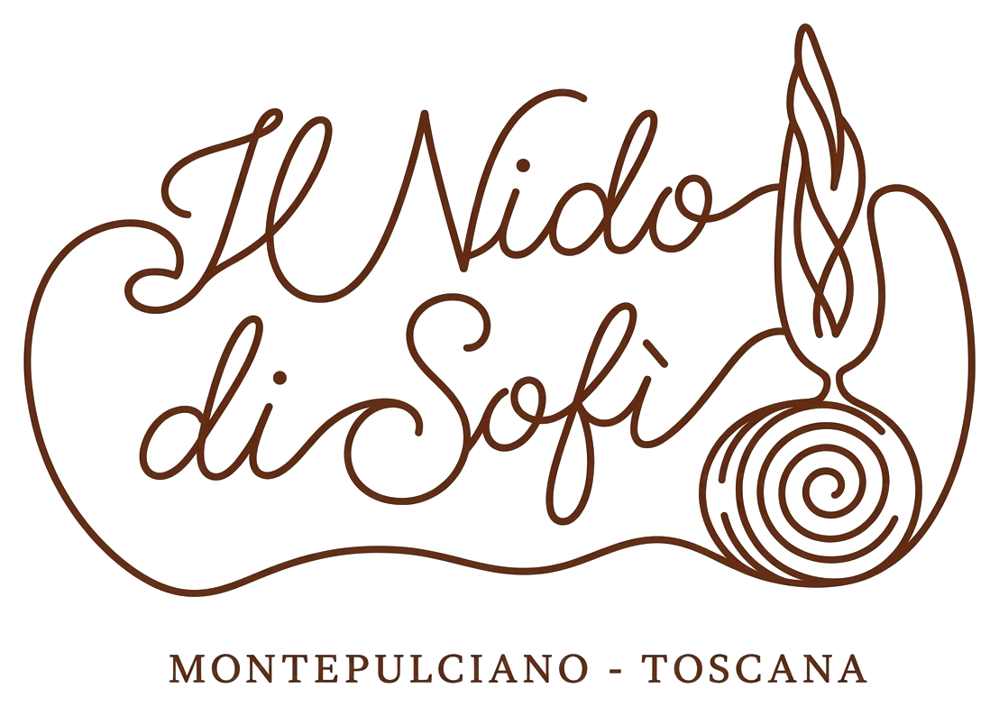

IL NIDO DI SOFÌ · MONTEPULCIANO
Una dimora
nel cuore di Montepulciano.
Autentica, intima e a pochi passi da Piazza Grande.
SCORRI ↓

01 — LA CASA
Semplice, raccolta,
curata nei dettagli.
Pavimenti in terracotta, travi a vista e spazi raccolti.
Wi-Fi veloceCucina attrezzataRiscaldamento autonomoAnimali ammessi
Appartamento a Montepulciano2 ospiti1 camera1 bagno
I dettagli del soggiorno
02 — NEL CUORE DEL BORGO
Una casa.
Un intero borgo.
Il Nido è in Via del Poliziano, nel centro storico di Montepulciano. Da qui raggiungi Piazza Grande lungo Via del Teatro, poi la Fortezza lungo Via di San Donato.
Via del Teatro
Via di San Donato
01 → 02 Via del Teatro02 → 03 Via di San Donato
Il percorso Le muraPLASTICO ILLUSTRATO · NON IN SCALA
Un plastico illustrativo per scoprire le tre tappe: volumi, distanze e mura sono interpretati e non in scala.
04 — IL BRAVÌO DELLE BOTTI

06 — ROSARIO & SOFIA
07 — DINTORNI
08 — PRENOTA DIRETTAMENTE
01
02
03
09 — CONTATTI
Restiamo
in contatto.
Per domande sul soggiorno puoi scriverci direttamente.
WhatsApp+39 334 209 1777
COSA APPREZZANO I NOSTRI OSPITI
— Fiona
— Penelope
— Beatrice
10 — FAQ